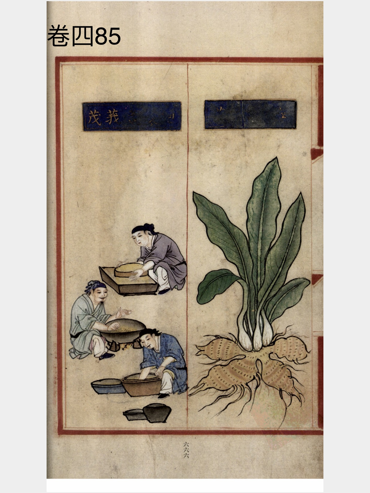
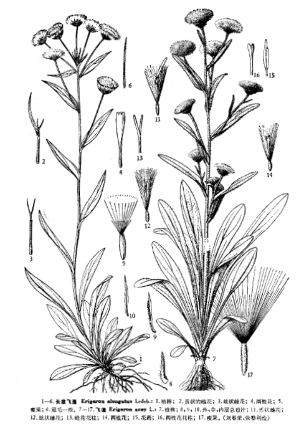

出现篇目
古代记载 《毛诗故训传》
蓬，草名也。（《毛传》注《驺虞》）
《毛诗正义》
蓬、草名。 其华如柳絮。 聚而飞如乱发也。（《毛诗正义》疏《伯兮》）
蓬、草名。一歳曰豵。（《毛诗正义》疏《驺虞》）
《本草纲目》
时珍曰∶陈藏器《本草》载蓬草子，不具形状。珍按∶蓬类不一∶有雕蓬，即菰草也，见菰米下；有黍蓬，即青科也；又有黄蓬草、飞蓬草。不识陈氏所指果何蓬也？以理推之，非黄蓬即青柯尔。黄蓬草生湖泽中，叶如菰蒲，秋月结实成穗，子细如雕胡米。饥 年人采食之，须浸洗曝舂，乃不苦涩。青科西南夷人种之，叶如茭黍，秋月结实成穗，有子如赤黍而细，其稃甚薄，曝舂炊食。又粟类有七棱青科、八棱青科，麦类有青稞、黄稞，皆非此类，乃物异名同也。其飞蓬乃藜蒿之类，末大本小，风易拔之，故号飞蓬。子如灰 菜 子，亦可济荒。又《魏略》云∶鲍出遇饥岁，采蓬实，日得数斗，为母作食。《西京杂记》 云∶宫中正月上辰，出池边盥濯，食蓬饵，以祓邪气。此皆不知所采乃何蓬也？大抵三种蓬 子，亦不甚相远。
当代记载 《中国植物志》
小蓬草（ Conyza canadensis），菊科，飞蓬属植物。一年生草本，根纺锤状，具纤维状根。茎直立，高50-100厘米或更高，圆柱状，多少具棱，有条纹，被疏长硬毛，上部多分枝。叶密集，基部叶花期常枯萎。花期5-9月。 我国南北各省区均有分布。原产北美洲，现在各地广泛分布。常生长于旷野、荒地、田边和路旁，为一种常见的杂草。

<补遗雷公炮制便览>

<中国植物志>